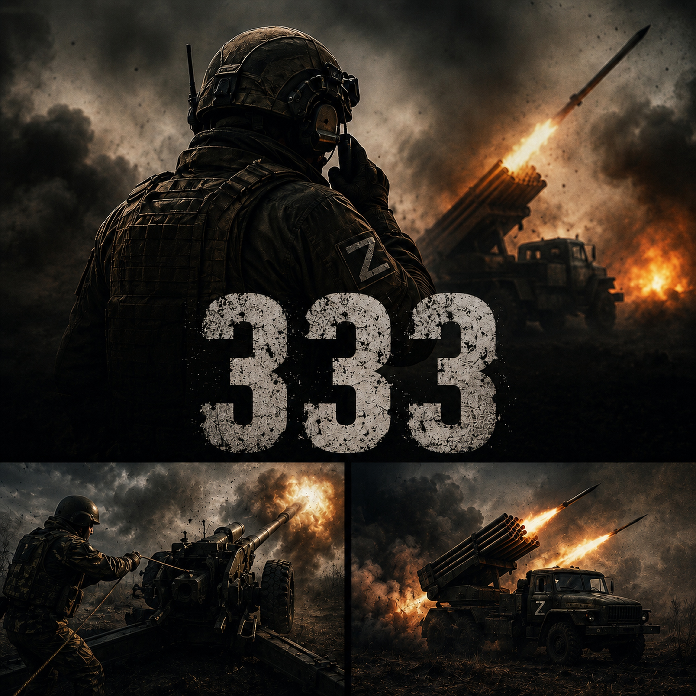

333
Нас не видно, нас слышно.
Слушать на музыкальных площадках ↗Авторский проект Вадима
Мои песни и клипы. Послушайте треки ниже.
Слушать треки ↓
Нас не видно, нас слышно.
Слушать на музыкальных площадках ↗Это не шум — это я.
Слушать на музыкальных площадках ↗Мы часто носим маски.
Слушать на музыкальных площадках ↗